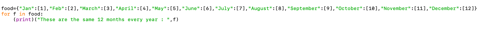

2) Mes išvardijome visus mėnesių pavadinimus užsakymuose []. Tada nustatykite lapės kilpą su kintamuoju x, vaizduojančiu kiekvieną mėnesio pavadinimą. Ir nustatykite diapazoną nuo 0 iki 12. Taigi visi mėnesiai gali būti išvardyti, kai spausdinsime x. šis pavyzdys parodys, kaip mes manipuliuojame eilutėmis, keisdami jas skliausteliais, sunumeruotą tvarką ir kai jos nėra sunumeruotos.
3) Toliau pateikti kodo vaizdai prieš jį paleidžiant:
4) Kodo vaizdai po jo paleidimo (išvesties):
5) Paaiškinimas:
Kaip matote, pirmasis kodo komponentas spausdina visus dvylika mėnesių be skliaustų tarp mėnesio skaičiaus ir mėnesio pavadinimo. Antrame paveikslėlyje parodyta, kaip mėnesiai yra sunumeruoti eilės tvarka, o tarp jų yra taškas, o trečioji parinktis yra skliausteliuose, o kiekvienas skaičius atitinka tą mėnesį.
Kadangi paskutiniame paveikslėlyje eilutė išspausdinama prieš kiekvieną mėnesio pavadinimą. Yra teiginys, kad, pavyzdžiui, 1 mėnuo yra sausio mėnuo. Ir eilės tvarka tęsiama žemyn eilutėje su kiekvienu mėnesio pavadinimu, po kurio eina „Mėnesio“ ataskaita.
1) Kaip naudoti „for“ ir „dictionary“ kaip įterptose kilpose?
2) Sukūrė žodyną, kuriame pateikiamas studentų vardų sąrašas, kurį visi atstovauja atitinkami registruoti kursai. Atspausdins pareiškimą, kuriame bus užduotas klausimas, kiek studentų nepavyks atlikti vieno kurso.
3) Šie kodekso vaizdai prieš jį paleidžiant:
4) Kodo vaizdai po jo paleidimo (išvesties):
5) Paaiškinimas:
Kode galite pamatyti, kaip užduodami klausimai apie tai, kiek studentų neišlaikė teisės kurso. Ir kaip matote, jei atsakymas nėra 2, jis atspausdins atsakymo pareiškimą, kuriame sakoma, kad tai ne tas skaičius, o tai 2 studentai, kurie neišlaikė šio kurso, ir dar vienas teiginys, kad vienas iš tų studentų yra „JŪS“. Tai parodo, kaip žodžio temomis galima „manipuliuoti“ ir gali spausdinti eilutę kelis kartus.
jei atsakymas yra 2, pokalbis baigiamas vieninteliu teiginiu „teisinga“.
1) Kaip žodynai veikia programuojant ir kaip jo raktui priskiriamos vertės ?.
2) Parašykite kodą su įvestimi, prašydami bet kokių atsitiktinių trijų pavadinimų. Tada tuos tris pavadinimus naudos kaip raktą ir priskirs tuos raktus atitinkamoms vertėms, pvz., „Filmams“. Spausdinant pavadinimus ir filmus, šalia jo rakto bus parodyta, kaip spausdinamos vertės. Kaip ir šiame pavyzdyje, šalia jo rakto atspausdintų filmų pavadinimai: asmens vardas.
3) Šie kodekso vaizdai prieš jį paleidžiant:
4) Kodo vaizdai po jo paleidimo (išvesties):
5) Paaiškinimas:
Pirmiausia matome, kaip naudotojo įvestis prašo atsitiktinių trijų vardų. Taigi tuos tris vardus davėme Jokūbui, Mato ir Lizai. Tada kodas ima tuos pavadinimus ir sukuria mėgstamiausių filmų, kurie yra tų pavadinimų verčių sąrašas, sąrašą. Viskas vyksta pagal kodą. Tada mums, pavyzdžiui, atrodo, kad „Jokūbui patinka žiūrėti šiuos du filmus“. Ir tokiu būdu jis parodo, kaip reikšmės spausdinamos su atitinkamu raktu, šiuo atveju; asmens vardas.
1) Kaip nustatyti greitą „For in Loop with string“?
2) Žodyne sukūrė duomenų rinkinį, apibrėžė eilutę kaip mėnesio pavadinimą. Ir nustatykite vertę kaip sveiką skaičių, reiškiantį mėnesio skaičių per metus. Priskyrė kintamąjį pavadinimu maistas ir visus duomenis talpina į maisto kintamąjį. Tada nustatykite, kad f bus maiste. Taigi, kai spausdinsime teiginį, jis atspausdins eilutę ir visus duomenis, kuriuos vaizduoja f, tai yra maistas.
3) Šie kodekso vaizdai prieš jį paleidžiant:

4) Kodo vaizdai po jo paleidimo (išvesties):
5) Paaiškinimas:
Kaip matote kodo paveikslėlyje, visi mėnesiai yra išvardyti maisto kintamajame, o po to - mėnesio numeris. O maisto kintamajam priskyrėme kintamąjį f. Rašydami „už maistą“. Panašiai dėl šio teiginio visi mėnesių pavadinimai ir jų numeriai buvo išspausdinti taip, kaip buvo tikėtasi.
1) Kaip apskaičiuoti paprastą dirbtą valandą/valandinį tarifą ir nuvažiuotą kilometrą/dujų suvartojimą?
2) Iš pradžių sukūrė trumpą skaičiuotuvą, skirtą apskaičiuoti bendrą nuvažiuotų kilometrų skaičių vienam sunaudotam dujų kiekiui. Suformuokite skliausteliuose nurodytų skaičių struktūrą. Naudokite ciklą „if/else“, kad galėtumėte toliau peržiūrėti atsakymą, jei atsakymas nėra pakankamai geras arba jis nėra teisingas. Panašiai taikė tą pačią struktūrą, kad išsiaiškintų, kiek kilometrų buvo nuvažiuota per naudojamas dujas. Paprašė vartotojo įvesties pateikti šiuos du numerius.
3) Šie kodekso vaizdai prieš jį paleidžiant:
4) Kodo vaizdai po jo paleidimo (išvesties):
5) Paaiškinimas:
Kaip matote visuose vaizduose, paprašykite naudotojo pateikti bet kokius du skaičius abiem skaičiavimams. Tada paimkite tuos du skaičius ir padauginkite bei padalinkite, kad rastumėte atsakymą už dirbtas valandas ir nuvažiuotas mylias. Tęskite ciklą su vartotojo įvesties atsakymais, jei norite patikslinti skaičiavimus arba nepataisyti, jei patikslinti, tada pakartoti skaičiavimus su skirtingais skaičiais, jei ne pataisyti, tada užbaigti ciklą ir pokalbį su „Good bye!“.
1) Kaip sukurti def funkciją ir grąžinti jos vertę?
2) Pirmiausia sukūrė def funkcijos pavadinimą „smagu; pavyzdžiui. Ir sukūrė du kintamuosius: drink1, drink2. Naudojant šiuos du kintamuosius, kai bus iškviesta ši funkcija, ji atspausdins šių dviejų kintamųjų reikšmes. Tačiau reikšmes reikia atspausdinti, kai iškviečiama def funkcija.
3) Šie kodekso vaizdai prieš jį paleidžiant:
4) Kodo vaizdai po jo paleidimo (išvesties):
5) Paaiškinimas:
Jei pažvelgsite, kaip teiginys spausdinamas def funkcijos viduje. pareiškimas atspausdinamas prieš iškviečiant def funkciją. Ir kintamasis bei jo reikšmės yra atskirti, pirmiausia turime kintamuosius: drink1 ir drink2 atspausdinti. Tada, kai kreipiamės į tuos kintamuosius, iškviečiame funkciją fun (), o skliausteliuose turime tų dviejų kintamųjų reikšmes, kurios yra „vanduo“ kintamam gėrimui1 ir „soda“ kintamam gėrimui2. Taip sukuriama def funkcija su jos kintamaisiais ir spausdinamos jos vertės.